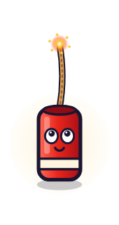
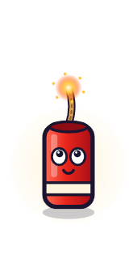
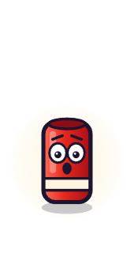
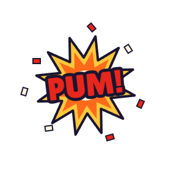
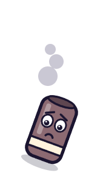

Antes de empezarAbre la plantilla
Vas a tener el proyecto preparado: la plaza, el petardo con sus dibujos y sus sonidos. Todavía sin programas.
Haz esto
- Entra en scratch.mit.edu y pulsa Crear.
- Menú Archivo › Cargar desde tu ordenador (a veces sale en inglés: Load from your computer). Elige plantilla.sb3.
- Abajo a la derecha está el objeto Petardo. Pulsa la pestaña Disfraces: tiene 11 dibujos.
- Pulsa la pestaña Sonidos: pum, fsss y pasodoble.
- Guarda: Archivo › Guardar en tu ordenador. Guarda siempre al acabar cada paso.
- Un truco: en Scratch, los números con decimales se escriben con punto, no con coma: 0.5.
Los disfraces del petardo





Del 1 al 9, la mecha se quema. El 10 es la explosión y el 11, el petardo fallado.
CompruebaEl escenario es la plaza y todavía no hay ningún programa.
Palabra nueva: objetoCada personaje o cosa del juego. Tiene disfraces, sonidos y programas.
¿Te atreves?Pasa los disfraces del 1 al 9 con el ratón. ¿Ves cómo se quema la mecha?
Al pulsar la bandera verde, el petardo aparece en el centro de la plaza.
Haz esto
- Elige el objeto Petardo, abajo a la derecha.
- En Eventos, arrastra al hacer clic en ⚑ al área de programas.
- En Movimiento, encaja debajo ir a x: y:. Escribe 0 y 0.
- En Apariencia, encaja cambiar disfraz a y elige mecha1.
- En Apariencia, encaja mostrar.
PruébaloPulsa la bandera verde. El petardo aparece en el centro, con la mecha entera.
Palabra nueva: secuenciaLos bloques se hacen en orden, de arriba abajo, uno detrás de otro.
¿Te atreves?Cambia los números de «ir a». ¿Dónde aparece con x: 100? ¿Y con y: −100?
La mecha se quema poco a poco y tarda justo 1 segundo.
Haz esto
- En Control, encaja repetir debajo de «mostrar». Cambia el 10 por 8.
- Dentro del repetir, encaja esperar 1 segundos Control. Cambia el 1 por 0.125 (con punto, no con coma).
- Debajo, también dentro, encaja siguiente disfraz Apariencia.
PruébaloLa mecha se quema y se acaba en 1 segundo: 8 × 0,125 = 1.
Palabra nueva: bucleRepite los bloques de dentro. Así no hace falta copiar 8 veces lo mismo.
¿Te atreves?Pon esperar 0.5. ¿Cuánto dura ahora la mecha?
Cuando haces clic en el petardo, explota: ¡PUM!
Haz esto
- En Eventos, arrastra al hacer clic en este objeto a un sitio libre. Es un programa nuevo.
- Encaja debajo: cambiar disfraz a pum Apariencia, iniciar sonido pum Sonido, esperar 0.3 segundos Control y esconder Apariencia.
- Pruébalo y haz clic pronto. ¿Qué pasa? Sale PUM… y vuelve la mecha.
- Arréglalo: en Control, coge detener todos y encájalo justo debajo de «al hacer clic en este objeto». En el menú, elige otros programas en el objeto.
Así tiene que quedar
El programa de la bandera no cambia.
PruébaloHaz clic: PUM, y la mecha ya no vuelve.
Palabra nueva: paralelismoDos programas funcionan a la vez. «Detener otros programas» para el de la mecha.
¿Te atreves?Cambia esperar 0.3 por 1. ¿Se ve mejor la explosión?
Un marcador que suma 100 decibelios con cada PUM.
Haz esto
- En Variables, pulsa Crear una variable. Nombre: decibelios. Marca «Para todos los objetos» y pulsa Aceptar.
- En el programa de la bandera, encaja dar a decibelios el valor 0 justo debajo de «al hacer clic en ⚑».
- En el programa del clic, encaja sumar a decibelios 1 después de «iniciar sonido pum». Cambia el 1 por 100.
PruébaloArriba a la izquierda sale el marcador. Cada PUM suma 100. Al empezar, vuelve a 0.
Palabra nueva: variableUna caja con nombre que guarda un número. El programa lo cambia.
¿Te atreves?Quita «dar el valor 0» y juega dos veces. ¿Qué le pasa al marcador?
Solo explota si haces clic cuando la mecha está casi acabada. Si nadie hace clic, falla: fsss.
Haz esto
- En Control, arrastra si entonces a un sitio libre.
- En el programa del clic, arrastra el bloque detener… (se lleva los de debajo) y suéltalo dentro del «si». Después, encaja el «si» debajo de «al hacer clic en este objeto».
- En Operadores, pon ( ) > ( ) en el hueco del «si». En el primer hueco, número de disfraz Apariencia. En el segundo, escribe 6.
- En el programa de la bandera, al final, encaja: esperar 0.2, cambiar disfraz a fallado, iniciar sonido fsss, esperar 0.5 y esconder.
PruébaloClic muy pronto: no pasa nada. Clic al final: PUM. Sin clic: fsss.
Palabra nueva: condición«Si pasa esto, entonces haz aquello». Aquí: si el disfraz es mayor que 6.
¿Te atreves?Pon 4 en vez de 6. ¿Es más fácil o más difícil?
Salen 20 petardos, uno cada segundo, cada uno en un sitio al azar.
Haz esto
- En el programa de la bandera, quita el bloque de arriba y pon al comenzar como clon Control.
- En ese programa, quita también «dar a decibelios el valor 0» e «ir a x: 0 y: 0».
- Después de «cambiar disfraz a mecha1», encaja ir a capa delantera Apariencia y elige trasera.
- Al final de ese programa y del programa del clic, cambia «esconder» por eliminar este clon Control.
- Haz un programa nuevo, la fábrica: al hacer clic en ⚑, esconder, dar a decibelios el valor 0 y un repetir 20.
- Dentro del repetir, pon ir a x: y:. En cada hueco, un número aleatorio entre Operadores: de −180 a 180 para x y de −80 a 80 para y.
- Debajo, también dentro: crear clon de mí mismo Control y esperar 1 segundos.
Así tiene que quedar
La fábrica
Cada clon
PruébaloSale un petardo cada segundo, en un sitio distinto. Puedes explotarlos todos.
Palabra nueva: clonUna copia del objeto. Cada clon hace su programa por su cuenta.
¿Te atreves?Haz que salgan cada 0.5 segundos. ¿Puedes con todos?
Suena el pasodoble y sale un petardo en cada golpe de la música.
Haz esto
- En la fábrica, después de «dar a decibelios el valor 0», encaja iniciar sonido pasodoble Sonido y esperar 3 segundos Control.
- En el repetir, cambia el 20 por 100.
- Cambia «esperar 1» por esperar 0.5: un golpe de la música dura medio segundo.
Pruébalo¿Van los petardos con la música? Al principio, sí… pero se van retrasando.
Palabra nueva: pulsoLos golpes de la música. Aquí hay 120 en un minuto: uno cada medio segundo.
¿Te atreves?Da palmas con la música mientras juegas. ¿Coinciden con los petardos?
Cada petardo explota justo con una nota de la dolçaina, y ya no se retrasa.
Haz esto
- La lista tiempos ya está en tu proyecto Variables: el segundo de cada nota.
- Crea la variable n. Es el número del petardo que toca.
- En la fábrica: dar a n el valor 1. Quita «esperar 3» y pon reiniciar cronómetro Sensores justo debajo de «iniciar sonido pasodoble».
- En el repetir, cambia el 100 por longitud de tiempos.
- Quita «esperar 0.5». Arriba del todo, dentro del repetir, pon esperar hasta que Control.
- En su hueco, pon un > Operadores. A la izquierda, cronómetro Sensores. A la derecha, un − Operadores.
- En el −: primero elemento n de tiempos, después un 1. Míralo en el dibujo.
- Al final del repetir: sumar a n 1.
Así tiene que quedar
¿No tienes la lista? Créala en Variables. Después, en el escenario, clic derecho sobre ella › importar › tiempos.txt.
PruébaloCada petardo explota con una nota. Haz clic al ritmo de lo que oyes.
Palabra nueva: listaMuchos números en orden, como una lista de la compra. «Elemento n» es el que toca ahora.
¿Te atreves?Mira la lista tiempos. ¿En qué segundo explota el petardo 1? ¿Y el 2?
Grabas tu propia mascletà: tú decides dónde y cuándo explota cada petardo.
Haz esto
- En Variables, crea dos listas: x e y.
- Programa nuevo para grabar: al presionar tecla g Eventos. Debajo, tres eliminar todos de: tiempos, x e y.
- Sigue debajo: detener todos los sonidos, iniciar sonido pasodoble y reiniciar cronómetro.
- Programa nuevo para cada petardo: al presionar tecla espacio. Debajo, tres añadir a.
- Añade el cronómetro a tiempos, la posición x del ratón Sensores a x y la posición y del ratón a y.
- En la fábrica, cambia los dos «número aleatorio» de «ir a» por elemento n de x y elemento n de y.
- Graba: pulsa G, mueve el ratón por la plaza y pulsa espacio en cada nota.
PruébaloCuando acabe la canción, pulsa la bandera: los petardos salen donde tú los pusiste.
Palabra nueva: datosEl juego guarda lo que haces (el segundo y el sitio) y luego lo usa.
¿Te atreves?Graba una mascletà para un compañero. ¿Puede superarla?
El juego tiene pantalla de inicio y de final, y cuenta la traca: los aciertos seguidos.
Haz esto
- En la fábrica, justo debajo de la bandera: cambiar fondo a plaza Apariencia.
- Al final de la fábrica, fuera del repetir: esperar hasta que cronómetro > 62 y cambiar fondo a final.
- Crea la variable traca. En la fábrica: dar a traca el valor 0.
- En el clic, después de «sumar a decibelios 100»: sumar a traca 1. En el clon, después de «iniciar sonido fsss»: dar a traca el valor 0.
- Antes de guardar, pulsa el escenario y elige el fondo inicio: así se ve la portada al abrir el juego.
PruébaloJuega la mascletà entera. ¿Cuál es tu traca más larga?
Palabra nueva: depurarProbar, encontrar lo que falla y arreglarlo. Lo has hecho en cada paso.
¿Te atreves?Cambiad la música, el fondo o lo que explota. Hacedlo vuestro.